OUM |
Business Process Management (BPM) Roadmap Supplemental Guide |
||
Method Navigation |
Current Page Navigation |
||
|
|
||||||||
This document contains OUM supplemental task guidance for the execution of a service based on the BPM Roadmap view.
The task guidelines in this document should be used to supplement the guidelines that appear in the OUM Task Overviews.
The current state assessment is based on the Oracle BPM Maturity Model. The BPM Maturity Model includes sixty capabilities that capture the best practices that Oracle has collected over many years working with a wide variety of companies. These capabilities provide the detail necessary to accurately measure and guide the progress of a BPM initiative. Focusing the current state assessment on these specific capabilities ensures a focused scope for the assessment.
For more information on the Oracle BPM Maturity Model, go to the Creating a BPM Roadmap document accessible from the IT Strategies from Oracle (ITSO) web site via the Supplemental Guidance page.
The current state assessment should be tightly time-boxed to ensure timely completion of the assessment. The size and complexity of an organization determines the actual amount of time that must be allocated to the assessment. Nominally, two weeks is the amount of time required. The underlying goal is not to fully capture an IT environment current state; rather it is to evaluate the current state relative to the capabilities that are required to successfully adopt BPM.
At the end of the Current State Assessment you will have completed the BPM Maturity Model. This includes the maturity and adoption score for each of the capabilities in the BPM Maturity Matrix. Additionally, the assessment team will have an understanding of the current state and should have collected known issues and problems that were identified and discussed during the interview process.
An overview of the Current State Assessment workflow is as follows:
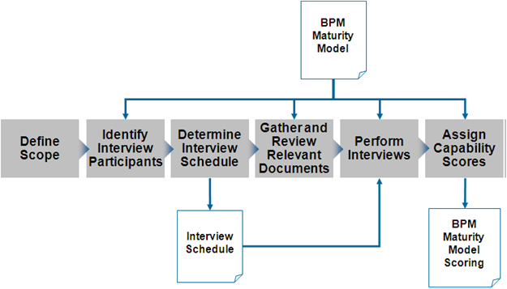
Before beginning the actual assessment, it is vital that the scope of the assessment is determined and that all involved parties agree to the defined scope. For example, the scope could be limited to a single division or line-of-business within a larger enterprise. Or the scope could be limited to a single geographic location. The scope defines both the scope of the assessment and, ultimately, the scope of the roadmap.
When doing this you would typically execute task step 1, Create Business Scope Definition, and depending on the result, execute one or multiple of the remaining steps in the task.
To be able to determine which participants should be interviewed as part of the assessment, perform a stakeholder assessment. With the information you have available, identify the key stakeholders (step 3 of the task), their base concerns, interest and influence (step 5).
Choose the participants that ensure that all capabilities within the BPM Maturity Model can be accurately scored. The following table describes the typical areas of interest and interview participants:
Area of Interest |
Typical Participant |
|---|---|
Business Objectives |
VP of Business Units LOB IT |
IT Objectives |
CIO VP of Application Development VP of IT Infrastructure |
Enterprise Architecture |
VP of Enterprise Architecture Enterprise Architect(s) Business Specialists / Architects |
Program Management |
PMO Manager Project Manager(s) |
Development Process |
Application Architect(s) Business Analyst(s) Business Process Engineer(s) Methodologist Build Manager CM Manager QA Manager |
Operations |
Director of Operations Administrator(s) |
Security |
Chief Security Architect |
Based on the stakeholder assessment, determine the final list of participants that should be interviewed as part of the assessment.
When you have selected the participants you need to interview, determine an interview schedule. The goal is to limit the length of the Current State Assessment by creating a compacted schedule. It may be necessary to delay the start of the assessment to accommodate the participants' schedules. Ideally, try to fit the all the interviews into approximately a two week period. Time before or between interviews can be productive time spent reviewing documentation (i.e., the next task).
When you have completed the list of interview participants and know the scope of the assessment, gather as much information as possible about the enterprise situation relevant for the assessment as part of the preparation for the interviews. Execute the tasks steps 3, 4 and 5 of ER.040, but as the purpose is to prepare for the interviews, it is not necessary to produce a Discovery Map presentation as a result of this task.
You should also gather any other relevant existing information that may be useful for your interviews preparation. Preferably, the documents to review should be the existing documents that describe various aspects of the current IT environment and BPM initiative. This allows the assessment team to ask more focused questions in the interviews and also provides the opportunity to ask questions about the written material for clarification or to resolve conflicting information. The following list gives some examples of the types of documents that should be gathered and reviewed:
Before each interview the assessment team should review the BPM Maturity Model to identify capabilities that are particularly relevant for the person being interviewed. It is NOT recommended that the assessment team simply ask a question for each of the capabilities. Rather the interview team should ask open ended questions that allow the interviewee to describe how things are currently done and to identify any problems that currently exists. Remember, the interviewees are the experts on what goes on within the organization being evaluated, so encourage them to explain the current situation.
Once the interviews have been completed and the documents have been reviewed, each of the capabilities in the BPM Maturity Matrix should be scored for both maturity and adoption. These scores provide the raw data that is analyzed during Gap Analysis. The BPM Maturity Model includes a description for each level of maturity and each level of adoption for each capability. When scoring a capability, the scores selected should be the scores where the descriptions of maturity level and adoption level most accurately match the current situation based on the information collected in interviews and from the documents reviewed. Although there is always some level of subjectivity when measuring capability, the goal is to provide an objective measure. This allows future measurements to be performed by a different assessment team, yet still provide results that can be used to accurately measure progress.
Frequently, when the assessment results are presented there are questions and even disagreements about the score that was assigned. Therefore, it is important that in addition to the score, the assessment team also records the rational for assigning the maturity and adoption scores. This rational could include quotes from interviews or specific sections from the documents that were reviewed.
The Future Vision Definition focuses solely on the high-level goals and principles that will be used to guide the entire BPM initiative. Do not attempt to create a detailed future state vision. While a more detailed future vision is required to achieve successful BPM adoption, it is not something that must be created prior to creating the initial BPM Roadmap. The initial phases of the BPM Roadmap may focus on creating the detailed BPM future vision.
The BPM Vision Definition answers the following questions:
These questions must be answered by the executive(s) leading the BPM initiative. This is accomplished in a facilitated workshop. Nominally, the workshop should take about two hours, but may take longer if there is no pre-existing understanding of BPM or there is substantial disagreement on why BPM is being pursued.
At the end of Future Vision Definition, you have a completed BPM Vision Definition. This contains the scope of the initiative, the expected benefits, and the guiding principles to achieve the goal and the benefits. This vision for the BPM initiative can be captured in a single summary slide and used to educate and align the organization with the BPM initiative. The figure below shows an example of such a summary slide:
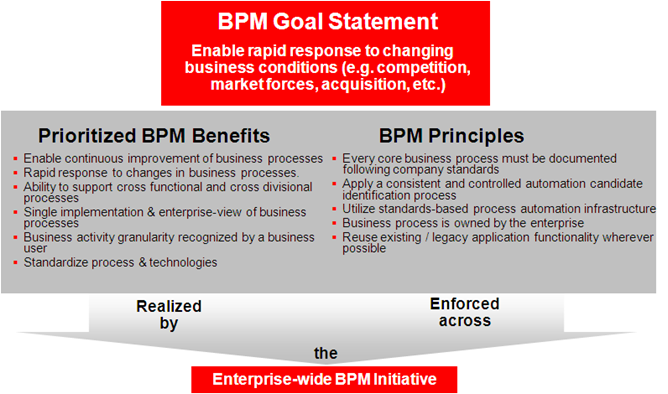
This picture clearly shows the goal and scope of the BPM initiative. It also shows that the BPM principles will be enforced across the entire BPM initiative and that the BPM initiative is expected to deliver the prioritized benefits.
Review the Business Strategy and identify areas relevant for BPM. In particular, task steps 4 (Determine Vision, Mission and/or Values) and 6 (Determine Goals, Objectives, Targets and Initiatives) are relevant. Use this as an input to prepare the goals of the BPM initiative. This should help you in answering the question, “What is the goal of the BPM initiative?” above. The goal being defined should be the goal for the BPM initiative after having executed the roadmap.
The recommended roadmap planning horizon is 2-3 years; therefore the goal should be the goal of the BPM initiative 2-3 years from now. The following table provides some example goal statements:
Score |
|
|---|---|
Enable rapid response to changing business conditions (for example, competition, market forces, acquisition, etc. |
5 |
Develop a cycle of continuous improvement of business processes. |
5 |
Monitor business process efficiency and effectiveness of change based on Key Performance Indicators (KPIs) |
4 |
Improve business process transparency and visibility for improved control and consistency. |
3 |
Facilitate streamlining of human tasks through automation. |
2 |
Apply BPM to a limited set of projects to demonstrate the benefits of BPM and build credibility with the business owners. |
1 |
Improve business/IT alignment through common business process language and shared repositories. |
1 |
The goal statements in the above table are used to gauge the extent and complexity of the entire BPM initiative and are listed in order of increasing difficulty. It should be obvious that accomplishing the first goal statement is far less difficult than accomplishing the fifth goal statement. Greater organizational maturity is required to achieve the more difficult goals for BPM. Of course, the benefits provided by BPM are commensurably greater as well. The Score column in the table is used (and will be explained) during Gap Analysis.
Once you have determined the BPM Goal statement (see BA.010 Identify Business Strategy), you should answer the second question above, “What is the organizational scope of the BPM initiative?” The organizational scope defines which departments, divisions, lines-of-business, etc., are included in the BPM initiative. The most common scopes are either division or enterprise, but other options are possible depending on the company's organizational structure. The following table provides example levels of scope for the BPM initiative.
Score |
|
|---|---|
A small number of projects will be applying process orientation. |
1 |
One or more business units will use BPM to address all of their projects. |
2 |
The BPM initiative will span all business units within a single division. |
3 |
The BPM initiative will span multiple divisions within the enterprise. |
4 |
The BPM initiative will span the entire enterprise. |
5 |
Defining the scope of the BPM initiative is essential to determining a roadmap. With greater scope, the number of organizational boundaries that must be crossed increases. This increases the complexity of the effort, and, therefore, requires greater organizational maturity. The Score column in the table is used (and will be explained) during Gap Analysis.
Finally, you should identify the list of expected BPM benefits that the organization realistically can achieve within the given timeframe, and with a successful adoption of BPM. This will help answer the third question,“What are the benefits that BPM is expected to deliver to the organization?”
There are many different benefits that an organization can realize by successfully adopting BPM. However, not all benefits can be realized in parallel. When creating a BPM Roadmap, emphasis should be placed on the benefits that are highest priority and leave the lower priority benefits for later phases. The list below shows examples of possible benefits from BPM adoption.
These benefits can be used as a starting place to identify the benefits that an organization hopes to achieve via BPM adoption. The above list is by no means a complete list. Part of the BPM Vision Definition is to create a list of possible BPM benefits and prioritize the list. Once a list has been created, the benefits should be prioritized based on the business and IT objectives of the organization. The easiest way to prioritize the benefits is to assign a high, medium, or low prioritization to each possible benefit. Roughly one third of the possible benefits should be in each prioritization, i.e., it is not helpful to list all the possible benefits as high priority.
The BPM Vision Definition is completed by defining a number of guiding principles. This answers the final question, “What are the guiding principles for the BPM initiative?” The principles should be defined to support the highest prioritized benefits, and should thereby provide enforceable guidance to the BPM initiative. The following list provides some example guiding principles.
The guiding principles should be sufficiently clear and detailed so that the principles can be enforced across the entire scope of the BPM initiative and on specific projects that fall under the purview of the initiative. The principles should also serve as a foundation to make more specific decisions in the future.
During Gap Analysis, the current state of the BPM initiative (as measured during the Current State Assessment above) is compared with the goal for the initiative (defined during Future Vision Definition above). The gap between these two is then analyzed to determine the causes and identify remediation approaches.
The maturity and adoption scores from the Current State Assessment measure the progress of a BPM initiative and, more importantly, identifies specific capabilities that are lacking or lagging and are therefore inhibiting the BPM initiative. The gap between where the organization is currently and where they need to be to achieve their goal is broken down by capability domain (from the BPM Maturity Model) to identify lagging domains. It is further broken down by individual capability to identify specific capabilities that are lacking or lagging. The following diagram illustrates the workflow.
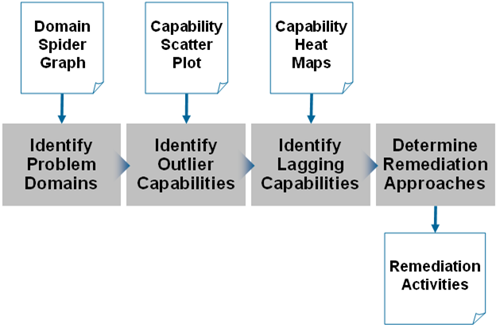
Once the lagging capabilities have been identified, a remediation approach for each of the identified inhibitors is determined from industry best practices and prior Oracle experience.
At the end of the Gap Analysis, you have the Remediation Activities at domain level. This includes an understanding of which domains and which individual capabilities are inhibiting the successful achievement of the goal of the BPM initiative. Additionally, it includes identified remediation activities that address the lagging domains and capabilities. The Remediation Activities provide the primary input into the roadmap creation.
The first step of Gap Analysis is to identify the domains that exhibit the largest gap between current maturity and the maturity needed to achieve the BPM goal. The gap for the domains can be visually represented by a spider (aka radar) graph as shown below:
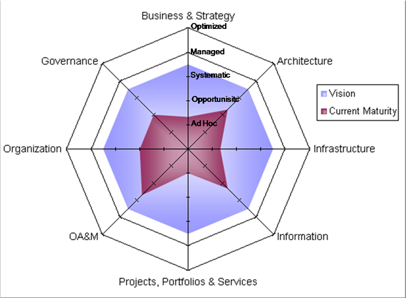
Vision versus Current Maturity
The Vision level is determined by the following formula:

Where GS is the score from the goal statement and SS is the score from the scope of the BPM initiative. This formula maps the goal statement to a level of maturity necessary to reach that goal. The scope of the initiative is used as a modifier if the scope score is greater than the goal score, i.e., it takes greater maturity to achieve success on a broader scope. The vision score (VS) is then mapped to the maturity levels in the BPM Maturity Model by applying the simple formula: 1=Ad Hoc, 2=Opportunistic, … , 5=Optimized.
For the example in the spider graph shown above, the Vision level was derived using this formula as follows:
Goal Statement - Improve business process transparency and visibility for improved control and consistency.
Scope Statement - The BPM initiative will span multiple divisions within the enterprise.
So GS = 3, SS = 4, and VS = (3+4)/2 = 3.5. The 3.5 score mapped to the maturity levels yields a vision maturity half way between Systematic and Managed. This Vision level of maturity is what is plotted in the spider graph figure.
The Current Maturity level for each domain is calculated by simply averaging the maturity score for each capability within the domain. This provides an average maturity for each of the eight domains which is then plotted in the spider graph.
Plotting the Current Maturity relative to the Vision (as shown in the spider graph above) provides a visual representation of the gap between where the organization is with respect to BPM and where it needs to be to meet the goal of the BPM initiative. In this example, the graph clearly shows that the Projects, Portfolios & Services domain is the area requiring the most attention followed closely by the Business & Strategy and Infrastructure domains.
This analysis should be fed into Activity Selection and Scheduling. In this example, initial activities in the roadmap should center on addressing the lagging capabilities in the Projects, Portfolios and Services, Business and Strategy, and Infrastructure domains.
Outlier capabilities are capabilities where the maturity and the adoption are significantly out of sync. This usually indicates a capability that should receive attention early in the roadmap. The outlier capabilities can be easily detected by plotting the maturity and adoption score for each capability in a scatter plot as shown in the following figure:
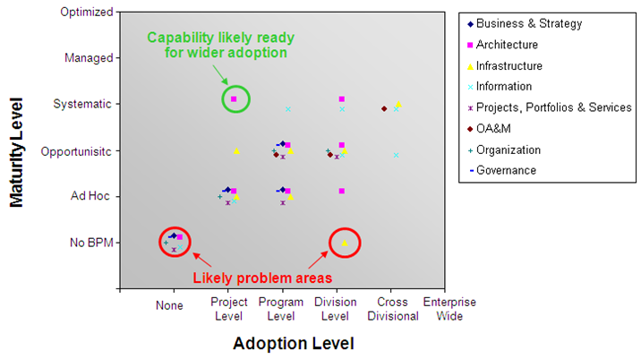
Capabilities Scatter Plot
As shown in the above graph, the maturity and adoption scores for capabilities usually fall along the diagonal when plotted against each other. In the above example, there are two scores that are significantly off the diagonal, one well above the diagonal and one well below the diagonal. The capability well above the diagonal is a capability from the Architecture domain. The capability well below the diagonal is a capability from the Infrastructure domain. The analyst will need to review the actual capability scores to identify exactly which capabilities yielded the outlier points on the graph.
A capability that falls well above the diagonal indicates a capability that is done very well within a relatively small area of the organization. In this example, there is a capability at a Systematic level of maturity done within a single project. Fostering greater adoption of this capability provides an easy win for the BPM initiative, i.e., there is no need to develop greater competency for this capability within the organization since it already exists within the organization. Some training or mentoring can spread the ability more broadly within the organization.
A capability well below the diagonal indicates a capability that is done poorly (or in a non-BPM compliant fashion) very broadly. In this example, there is a capability being done at a No BPM level of maturity across the entire division. Corrective action needs to be taken for this capability since if left uncorrected, it will inhibit (and probably already has inhibited) the BPM initiative.
The lagging capabilities would typically require attention in early phases of the roadmap. These are the capabilities that plot nearer the lower left corner in the scatter plot above. Capability heat maps can be used to visually identify these low maturity capabilities as shown in the following figure:
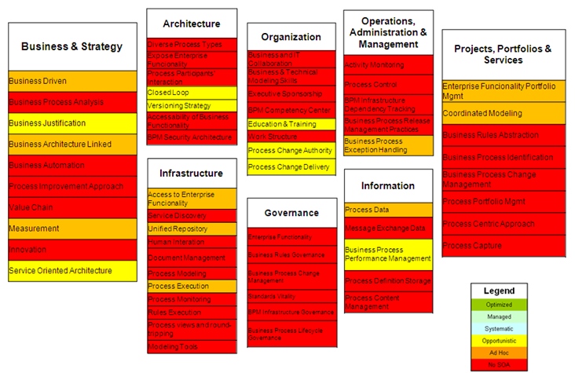
Capabilities Heat Map
The capabilities heat map colors each of the capabilities based on the maturity score recorded for that capability. The above diagram shows the color coding legend as well as each capability with color coding applied. The capabilities are organized by the domains used in the BPM Maturity Model. The heat map draws immediate attention to the capabilities that require attention. In the above example, there are five capabilities in the Business and Strategy domain (Business Process Analysis, Business Automation, Process Improvement Approach, Value Chain and Innovation) that scored at the No BPM level of maturity. These capabilities should be addressed in early phases of the BPM Roadmap. Likewise, there are six capabilities in the Projects, Portfolios and Services domain that scored at the No BPM level of maturity. All of the capabilities in the Governance domain were scored at the No BPM level of maturity, an obvious indicator that BPM is very immature for this organization.
You should review each capability with a low score and determine whether it is a top priority, a low priority, or unimportant from a roadmap creation perspective. If a capability is deemed unimportant for a particular organization, it should be removed from the maturity model and the graphics should be regenerated. This should be done with caution. A capability should only be removed if it is clearly not appropriate for the BPM initiative at this organization.
At this point in Gap Analysis, the problem domains have been identified and the problem capabilities within each domain have also been identified. The next step is to identify remedies for each problem domain and capability. Obviously, the remedies depend on the problem being addressed and frequently have some aspect that is organization specific. Therefore, unfortunately, it is not possible to provide a prescriptive approach to determining remediation activities for all 60 capabilities. However, there are some general guidelines based on the domains that can usually be applied to creating remediation activities, as shown in the table below:
Domain |
Remediation Approach |
|---|---|
Business & Strategy |
Remediation for this domain and the capabilities within this domain usually requires executive management decisions and directives. A common remediation activity is a facilitated workshop with appropriate executives to define the necessary strategies, make decisions, and formulate directives. |
Architecture |
Low scores in this domain usually indicate the lack of a reference architecture for the BPM initiative, or if the reference architecture exists, it lacks completeness and details. Remediation usually entails workshops with enterprise architects to specify a complete, detailed reference architecture. |
Infrastructure |
Low scores in this domain usually indicate that the process infrastructure is lacking significant elements. Infrastructure installation and configuration type projects are common remediation activities. |
Information |
Low scores in this domain usually indicate issues with the information architecture, data quality approach, and/or information stewardship. Common remediation activities are workshops to address the causes for the low scores. |
Operations, Administration & Management |
Remediation activities for low scores in this domain usually entail definition, documentation, and enforcement of BPM compatible. |
OA&M Procedures |
Low scores could be due to lacking BPM knowledge/skills or could be due to a low maturity of OA&M in general. |
Projects, Portfolios & Services |
Low scores in this domain usually indicate a lack of BPM compatible management and delivery processes. Common remediation activities entail workshops to modify existing management and delivery processes to inject BPM best practices. |
Organization |
Low scores in this domain usually indicate that roles and responsibilities appropriate for BPM have not been instituted within the organization. There may also be a lack of BPM knowledge/skills. Common remediation activities include developing training plans and workshops to define the necessary roles and responsibilities. Remediation may also require organization restructuring. |
Governance |
Most organizations have existing IT governance in place, so low scores in this domain usually indicate that governance has not been extended to cover BPM. Remediation usually requires a workshop to define and institute the governance extensions required for BPM. |
During Activity Selection and Scheduling, prioritize the remedies that you identified during Gap Analysis and use this to create a plan, called the BPM Roadmap. Business processes are evaluated to select the business processes that are most appropriate for application of BPM technology. This should not be equated to evaluating the value of the business process itself; rather it measures the benefits (versus the risks) of the application of BPM technology.
There are four steps in Activity Selection and Scheduling:
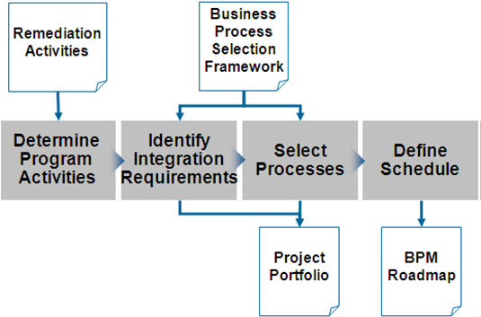
At the end of the Activity Selection and Scheduling you have a completed BPM Roadmap.
The first step when determining the program activities is to prioritize the remediation activities identified in the Gap Analysis. Top priority is usually given to remediation activities that focus on the domain with lowest current maturity score. Top priority remediation activities are usually the first activities in the roadmap since the results from these activities are leveraged across the solution and service delivery efforts.
After the program activities have been prioritized, determine when each of the activities should best be executed, and split the BPM Roadmap into phases.
Program-level activities frequently entail changes with wide-ranging impacts. For example, changing the software development process (to inject process-oriented best practices) impacts all development teams within the scope of the BPM initiative.
Organizational changes can be even more taxing. Therefore, it is usually necessary to undertake these changes in a series of iterations. These iterations become the phases of the overall BPM Roadmap. At a high level, this can be shown graphically as illustrated by the figure below:
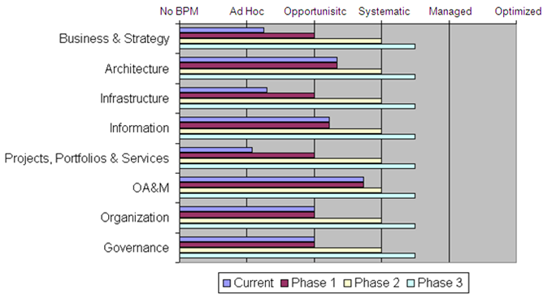
Increasing Maturity Over Time
The graph illustrates three iterations each increasing maturity of one or more domains until the desired vision level of maturity is achieved. Notice that the first phase focuses on bringing all domains up to the Opportunistic level of maturity. This means that the first phase will include remedy activities for the Business & Strategy, Infrastructure, and Projects, Portfolios & Services domains. Once near parity is achieved across domains, follow-on phases address the eight domains more uniformly to keep the BPM initiative progressing smoothly.
The amount of change introduced by an iteration must not exceed the organization's ability to absorb that change; therefore the scope of each iteration must be carefully planned. Likewise, the duration of each iteration must be long enough to accomplish some meaningful progress, yet remain short enough to minimize risk and maintain a continuous pace of incremental progress.
Identify Integration Requirements
This is done in parallel with the next step, select processes.
Having selected the program level activities, the next step is to identify processes that should be included in the roadmap. One of the selection criteria used for the process candidates is the accessibility of functionality from existing applications. It may be necessary to make modifications to these applications to support the new project. There are two main types of changes:
The new process should not require additional capacity or better performance than the existing applications or SOA services currently provide since, in principle, the business process is not changing. However, it is important to be aware of possible changes to non-functional aspects and the potential for increased demands on the application.
The most likely case is that the existing application or SOA service needs extensions to support the integration in the process automation. These changes should be factored in to the process selection and the effort and integration approach clearly established in advance of project start. Ideally the changes can be done in a backward compatible manner; thereby allowing existing consumers of the SOA services to move to the new version deployed to support the new process.
Typically, integration requirements are best satisfied through a SOA approach; however, since a new SOA project is likely to provide additional benefits such projects should be justified separately using the SOA Roadmap planning and engineering strategies.
It is possible that the required business application functions do not currently exist anywhere in the organization. In this case, the process candidate may support justification for the development of application or service capabilities in a separate engineering project.
Any of the above types of change to existing application functionality or SOA services needs to be reflected in the BPM Roadmap, regardless of whether or not they are handed off to a separate project. Obviously, the processes that use the SOA services have a dependency on the external change activities so these dependencies must be captured in the roadmap.
When selecting candidates for process automation, use a combination of the tasks BA.040 (Create Enterprise Function of Process Model), BA.060 (Perform High-Level Use Case Discovery), and BA.090 (Identify Process Improvement Options) to determine a list of processes relevant for your BPM Roadmap. Look at the earlier identified integration requirements and use the Enterprise Process Model to see which processes are the ones relevant for further investigation. It is possible that the required business application functions do not currently exist anywhere in the organization, so you perform a high-level use case discovery to identify these. You also look for relevant process improvement options that you may see based on the identified integration requirements.
There are three primary areas to analyze to identify the process automation candidates:
If the required business application functions do not currently exist anywhere in the organization, then the process candidate may support justification for the development of application or SOA service capabilities in a separate engineering project. Process candidate identification and analysis is a large topic and is beyond the scope of this document, but you can see the example of a result of a process candidate analysis in the figure below:
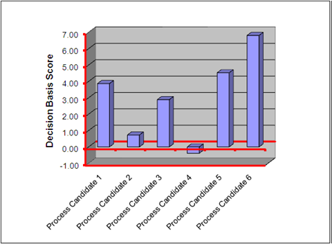
Process Candidate Analysis
This example shows six business process candidates. A Decision Base Score has been calculated for each of the process candidates based on a number of characteristics, typically related to the three areas mentioned above. A positive Decision Basis Score indicates a process candidate that should be realized into an automated process. Thus, process candidates 1, 2, 3, 5, and 6 should be included in the BPM Roadmap with process candidates 5 and 6 tackled in the earliest phase of the roadmap. Process candidate 4 should not be realized (at this time). The process candidates that are selected should be included in the BPM Roadmap. Process candidates that are not selected should be recorded for future iterations of the roadmap. Although the process candidate did not make the cut for this iteration of the roadmap, it might very well make the cut in a future iteration.
The final step in the BPM Roadmap is to define the schedule for the Roadmap. This schedule should be the schedule for the entire BPM initiative; thus it is the high-level schedule that illustrates the ordering and dependency relationships between program-level activities, the selected projects, service modifications, and the selected process candidates.
We have seen an example of how the phases of a BPM Roadmap may be in the figure, Increasing Maturity Over Time; however, this figure does not include actual timelines since that could not be determined until the projects, integrations and process candidates were identified. The steps to put together the schedule are as follows:
The first activity of defining the schedule is to determine the start date and duration for the program level activities. These are the initial activities put into the BPM Roadmap.
The next step is to determine the start dates for the selected projects. Projects that are expected to leverage the outcomes of the program level activities (usually all projects) should not begin in earnest until the program-level activities complete. Some overlap is allowed since the earliest phases of a project (e.g., Inception) can usually commence before the program-level activities are completed. The end date for the project is determined by effort, complexity, and resource availability. Sometimes the end date is mandated by business needs. In either case, the end date for the project is put into the schedule.
The delivery dates for the application integrations and SOA service modifications are determined by the needs of the project requiring the changes. Generally, the integrations and SOA service modifications must be available in time for project integration testing. Of course, an earlier delivery date is certainly acceptable and is, in fact, preferable.
Most of the projects included in the BPM Roadmap will have business process management automation as the primary delivery of the project. Exceptions include the infrastructure projects that deliver the shared BPM infrastructure used by multiple process management automation projects. The delivery dates for the selected business processes are determined and are incorporated into the schedule. The delivery dates for the selected business processes lie within the enclosing project delivery time line.
At this point, any resource constraints need to be incorporated into the schedule. This may require that start dates are delayed or durations may increase. Once these constraints have been included, a schedule can be created and might look something like the schedule shown in the next figure:
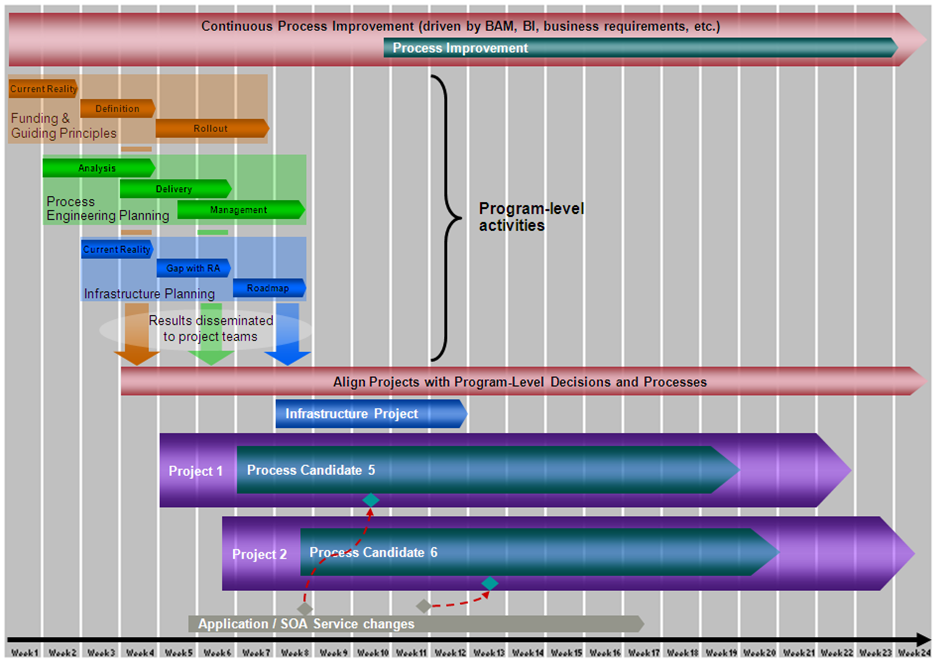
Roadmap Phase 1 Schedule
The above schedule begins with three program-level activities to address the three domains (Business & Strategy, Projects, Portfolios & Services, and Infrastructure) that scored below the Opportunistic maturity level. The results from the program level activities are then disseminated to all the projects and process candidate realization activities shown in the bottom half of the figure. The Infrastructure Project shown in the roadmap delivers the BPM infrastructure used by the other two projects shown.
This process Infrastructure Project is focused purely on realizing the process infrastructure such as defined in the Oracle Reference Architecture paper, BPM Infrastructure. The Infrastructure Planning (that was part of the program level activities) defines what technologies and products are deployed by the Infrastructure Project.
Project 1 and Project 2 both deliver the automation of business processes (Process Candidate 5 and Process Candidate 6). The two process candidates are those that we could see had the highest Decision Base Score in the Process Candidate Analysis. Finally, the graphic shows the application and SOA service modifications that are required to support the projects. This is to expose the necessary functionality that is required by the tasks in the business processes.
As discussed earlier, the detail in the initial phase of the BPM Roadmap will be much greater than the detail provided for the later phases. The later phases likely include additional program-level activities and more projects and the process candidates on which they are dependent, but will contain less detail. An example of such a schedule is shown in the next figure:
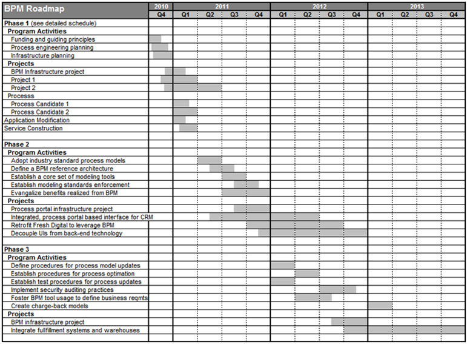
BPM Roadmap Subsequent Phases
The first phase schedule was broken down into weeks but only covered two quarters. This schedule covers the entire planning horizon (three years) but with significantly less detail. The projects chosen for the first phase were relatively short in duration and effort. This is to help ensure early wins for the BPM initiative. Subsequent phases can then afford to undertake more complex efforts (e.g., legacy sun-setting) that could take years to complete.
Subsequent phases will also likely have additional infrastructure projects that continue to build out the reference architecture. The capabilities of the reference architecture built out in each phase depend on the needs of the projects and services that are included in the phase.

Copyright © 2006, 2016, Oracle and/or its affiliates. All rights reserved.